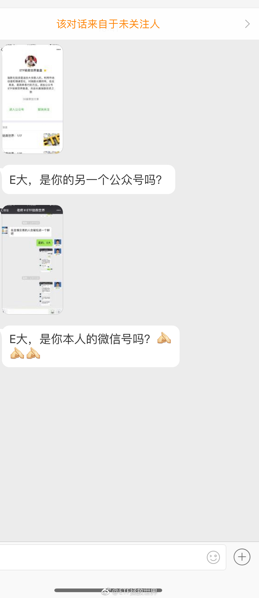
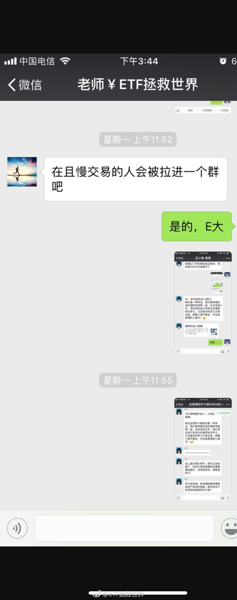

回复@慎独慎入慎犬儒:我倒觉得不是不可能。在我的字典里资本市场没有不可能，所以到了我也不意外。但是，即使到了我也不会死。这个可能会让很多人失望了。//@慎独慎入慎犬儒:我才不信，3000得多惨。。@ETF拯救世界:全指医药最高到现在跌了54%。刚跌了一半怎么理解，是说一共要跌100%还是说还要跌54%？再跌54%是3000多点，估值大概十倍。美国医药股估值25。等着看看能不能到。
回复@多多100001:没事。去年全年我们买了三份，加仓不到2%。再跌50%，我再加5%。钱还有，就等跌了。//@多多100001:应该能到吧，医药那块又出政策了，估计还得跌跌。@ETF拯救世界:全指医药最高到现在跌了54%。刚跌了一半怎么理解，是说一共要跌100%还是说还要跌54%？再跌54%是3000多点，估值大概十倍。美国医药股估值25。等着看看能不能到。
我再次请大家都长点心眼，这可能是我吗？其它的我也不想多说了。 我告诉你们这些骗子，你们冒充我我没精力跟你们干，劝你们冒充且慢工作人员招摇撞骗小心点，他们公司的法务人员正好派上用场了。少干点坏事，踏踏实实过点好日子。 
回复@In兴No1:当然是我们。手里还有债和钱，到2000买买买开心的不得了。涨跌都开心，怎么，不服吗。//@In兴No1:呵呵.2000点时大家看谁笑得开心@ETF拯救世界:牛市是否就此开始，咱们并不关心。买够了，踏踏实实等着就行了。吃嘛嘛香。但有些人就特别关心。不仅关心，还有点提心吊胆。比如2500点清仓的人……
想要在资本市场赚钱，两个方面，第一个策略，第二个心理。如果你的心理很脆弱，患得患失，就用强力的策略去弥补。把自己当作机器，完全执行策略。无论自己如何畏惧，贪婪，都坚定执行。干就是了。反过来，很多时候，一个很好的策略也需要良好的心理状态去支撑。否则给你一把98k你也未必能打死人。相辅相成，缺一不可。